건축산업기사 (2020-08-22 기출문제)
1과목: 건축계획
1. 공동주택의 단면형 중 스킵 플로어(skip floor) 형식에 관한 설명으로 옳은 것은?
- 하나의 단위주거의 평면이 2개 층에 걸쳐 있는 것으로 듀플렉스형이라고도 한다.
- 하나의 단위주거의 평면이 3개 층에 걸쳐 있는 것으로 트리플렉스형이라고도 한다.
- 주거단위가 동일층에 한하여 구성되는 형식이며, 각 층에 통로 또는 엘리베이터를 설치하게 된다.
- 주거단위의 단면을 단층형과 복층형에서 동일층으로 하지 않고 반 층씩 어긋나게 하는 형식을 말한다.
(정답률: 72%)

2. 주택 부엌의 작업대 배치 방식 중 L 형 배치에 관한 설명으로 옳지 않은 것은?
- 정방형 부엌에 적합한 유형이다.
- 부엌과 식당을 겸하는 경우 활용이 가능하다.
- 작업대의 코너 부분에 개수대 또는 레인지를 설치하기 곤란하다.
- 분리형이라고도 하며, 모든 방향에서 작업대의 접근 및 이용이 가능하다.
(정답률: 67%)
3. 아파트 단지 내 주동배치 시 고려하여야 할 사항으로 옳지 않은 것은?
- 단지 내 커뮤니티가 자연스럽게 형성되도록 한다.
- 주동 배치계획에서 일조, 풍향, 방화 등에 유의해야 한다.
- 옥외주차장을 이용하여 충분한 오픈스페이스를 확보한다.
- 다양한 배치기법을 통하여 개성적인 생활공간으로서의 옥외공간이 되도록 한다,
(정답률: 66%)
4. 상점건축의 진열창 계획에 관한 설명으로 옳은 것은?
- 밝은 조도를 얻기 위하여 광원을 노출한다.
- 내부 조명은 전반 조명만 사용하는 것을 원칙으로 한다.
- 진열창의 내부 조도를 외부보다 낮게 하여 눈부심을 방지한다.
- 외부에 면하는 진열창의 유리로 페어 글라스를 사용하는 경우 결로 방지에 효과가 있다.
(정답률: 55%)
5. 학교의 강당 및 체육관 계획에 관한 설명으로 옳은 것은?
- 체육관의 규모는 표준 배구코트를 둘 수 있는 크기가 필요하다.
- 강당은 반드시 전교생 전원을 수용할 수 있도록 크기를 결정한다.
- 강당의 진입계획에서 학교 외부로부터의 동선을 별도로 고려하지 않는다.
- 강당을 체육관과 겸용할 경우에는 일반적으로 체육관 기능을 중심으로 계획한다.
(정답률: 65%)
6. 사무소 건축의 코어(core)에 관한 설명으로 옳지 않은 것은?
- 독립코어는 방재상 유리하다.
- 독립코어는 사무실 공간 배치가 자유롭다.
- 편심코어는 기준층 바닥면적이 작은 경우에 적합하다.
- 중심코어는 바닥면적이 큰 고층, 초고층 사무소에 적합하다.
(정답률: 56%)
7. 백화점에 설치하는 에스컬레이터에 관한 설명으로 옳지 않은 것은?
- 수송량에 비해 점유면적이 작다.
- 설치 시 층고 및 보의 간격에 영향을 받는다.
- 비상계단으로 사용할 수 있어 방재계획에 유리하다.
- 교차식 배치는 연속적으로 승강이 가능한 형식이다.
(정답률: 62%)
8. 아파트의 평면형식 중 계단실형에 관한 설명으로 옳은 것은?
- 집중형에 비해 부지의 이용률이 높다.
- 복도형에 비해 프라이버시에 유리하다.
- 다른 유형보다 독신자 아파트에 적합하다.
- 중복도형에 비해 1대의 엘리베이터에 대한 이용가능한 세대수가 많다.
(정답률: 69%)
9. 연립주택의 종류 중 타운 하우스에 관한 설명으로 옳지 않은 것은?
- 배치상의 다양성을 줄 수 있다.
- 각 주호마다 자동차의 주차가 용이하다.
- 프라이버시 확보는 조경을 통하여서도 가능 하다.
- 토지 이용 및 건설비, 유지관리비의 효율성은 낮다.
(정답률: 59%)
10. 다음 중 공간의 레이아웃(layout)과 가장 밀접한 관계를 가지고 있는 것은?
- 재료계획
- 동선계획
- 설비계획
- 색채계획
(정답률: 75%)
11. 학교 교실의 배치방식 중 클러스터형(cluster type)에 관한 설명으로 옳지 않은 것은?
- 각 학급의 전용의 홀로 구성된다.
- 전체배치에 융통성을 발휘할 수 있다.
- 복도의 면적이 커지며 소음의 발생이 크다.
- 교실을 소단위로 분리하여 설치하는 방식을 말한다.
(정답률: 45%)
12. 다음 중 사무소건축계획에서 코어시스템(core system)을 채용하는 이유와 가장 거리가 먼 것은?
- 구조적인 이점
- 피난상의 유리
- 임대면적의 증가
- 설비계통의 집중
(정답률: 45%)
13. 1주간의 평균수업시간이 35시간인 어느 학교에서 제도실이 사용되는 시간이 1주에 28시간 이며, 이 중 18시간은 제도수업으로, 10시간은 구조강의로 사용되었다면, 제도실의 이용률과 순수율은 각각 얼마인가?
- 이용률 : 80%, 순수율 : 35.7%
- 이용률 : 80%, 순수율 : 64.3%
- 이용률 : 51.4%, 순수율 : 35.7%
- 이용률 : 51.4%, 순수율 : 64.3%
(정답률: 68%)
14. 주택의 각 실에 있어서 다음 중 유틸리티 공간(utility area)과 가장 밀접한 관계가 있는 곳은?
- 서재
- 부엌
- 현관
- 응접실
(정답률: 52%)
15. 상점계획에 관한 설명으로 옳지 않은 것은?
- 고객의 동선은 원활하게 하면서 가급적 길게하는 것이 좋다.
- 쇼윈도의 바닥높이는 상품의 종류에 따라 높낮이를 결정하게 된다.
- 상점 내부의 국부조명은 자유롭게 수량, 방향, 위치를 변경할 수 있도록 한다.
- 종업원 동선은 고객의 동선과 교차되는 것이 바람직하고, 가급적 보행거리를 길게한다.
(정답률: 71%)
16. 다음 중 주택에서 가사노동의 경감을 위한 방법과 가장 거리가 먼 것은?
- 설비를 좋게 하고 되도록 기계화 할 것
- 능률이 좋은 부엌시설이나 가사실을 갖출 것
- 평면에서의 주부의 동선이 단축되도록 할 것
- 청소 등의 노력을 절감하기 위하여 좁은 주거로 계획할 것
(정답률: 72%)
17. 한식주택의 특징으로 옳지 않은 것은?
- 단일용도의 실
- 좌식 생활 기준
- 위치별 실의 구분
- 가구는 부차적 존재
(정답률: 63%)
18. 사무소 건축의 엘리베이터 계획에 관한 설명으로 옳지 않은 것은?
- 수량 계산 시 대상 건축물의 교통수요량에 적합해야 한다.
- 승객의 층별 대기시간은 평균 운전간격 이하가 되게 한다.
- 초고층, 대규모 빌딩인 경우는 서비스 그룹을 분할하여서는 안 된다.
- 건축물의 출입층이 2개 층이 되는 경우는 각각의 교통 수요량 이상이 되도록 한다.
(정답률: 67%)
19. 공장건축의 배치형식 중 분관식에 관한 설명으로 옳지 않은 것은?
- 통풍 및 채광이 양호하다.
- 공장의 확장이 거의 불가능하다.
- 각 동의 건설을 병행할 수 있으므로 조기 완성이 가능하다.
- 각각의 건물에 대해 건축형식 및 구조를 각기 다르게 할 수 있다.
(정답률: 69%)
20. 다음 중 사무소 건축에서 기준층 층고의 결정 요소와 가장 거리가 먼 것은?
- 채광률
- 사용목적
- 공조시스템
- 엘리베이터의 용량
(정답률: 67%)
2과목: 건축시공
21. 60㎝×40㎝×45㎝인 화강석 200개를 8톤 트럭으로 운반하고자 할 때, 필요한 차의 대수는? (단, 화강석의 비중은 약 2.7이다.)
- 6대
- 8대
- 10대
- 12대
(정답률: 51%)
22. 종래의 단순한 시공업과 비교하여 건설사업의 발굴 및 기획, 설계, 시공, 유지관리에 이르기까지 사업전반에 관한 것을 종합, 기획 관리하는 업무영역의 확대를 무엇이라고 하는가?
- EC
- LCC
- CALS
- JIT
(정답률: 55%)
23. 다음 중 철골공사 시 주각부의 앵커볼트 설치와 관련된 공법은?
- 고름모르타르 공법
- 부분 그라우팅 공법
- 전면 그라우팅 공법
- 가동매입공법
(정답률: 44%)
24. 회반죽의 재료가 아닌 것은?
- 명반
- 해초풀
- 여물
- 소석회
(정답률: 57%)
25. 다음 용어 중 지반조사와 관계없는 것은?
- 표준관입시험
- 보링
- 골재의 표면적 시험
- 지내력 시험
(정답률: 56%)
26. 콘크리트를 혼합할 때 염화마그네슘(MgCl2)을 혼합하는 이유는?
- 콘크리트의 비빔 조건을 좋게 하기 위함이다.
- 방수성을 증가하기 위함이다.
- 강도를 증가하기 위함이다.
- 얼지 않게 하기 위함이다.
(정답률: 63%)
27. 다음 중 건축용 단열재와 가장 거리가 먼 것은?
- 테라코타
- 펄라이트판
- 세라믹 섬유
- 연질섬유판
(정답률: 57%)
28. 유리제품 중 사용성의 주목적이 단열성과 가장 거리가 먼 것은?
- 기포유리(foam glass)
- 유리섬유(glass fiber)
- 프리즘 유리(prism glass)
- 복층유리(pair glass)
(정답률: 61%)
29. 바차트와 비교한 네트워크 공정표의 장점이라고 볼 수 없는 것은?
- 작업상호간의 관련성을 알기 쉽다.
- 공정계획의 작성시간이 단축된다.
- 공사의 진척관리를 정확히 실시할 수 있다.
- 공기단축 가능요소의 발견이 용이하다.
(정답률: 59%)
30. 건설공사 입찰에 있어 불공정 하도급거래를 예방하고 하도급 활성화를 촉진하기 위한 목적으로 시행된 입찰제도는?
- 사전자격심사 제도
- 부대입찰 제도
- 대안입찰 제도
- 내역입찰 제도
(정답률: 52%)
31. 기성콘크리트말뚝에 관한 설명으로 옳지 않은 것은?
- 선굴착 후 경타공법으로 시공하기도 한다.
- 항타장비 전반의 성능을 확인하기 위해 시험말뚝을 시공한다.
- 말뚝을 세운 후 검측은 기계를 사용하여 1방향에서 한다.
- 말뚝의 연직도나 경사도는 1/100 이내로 관리한다.
(정답률: 49%)
32. 조적공사에서 벽두께를 1.0B로 쌓을 때 벽면적 1m2당 소요되는 모르타르의 양은? (단, 모르타르의 재료량은 할증이 포함된 것으로 배합비는 1：3, 벽돌은 표준형임)
- 0.019m3
- 0.049m3
- 0.078m3
- 0.092m3
(정답률: 49%)
33. 거푸집 측압에 관한 설명으로 옳지 않은 것은?
- 콘크리트의 슬럼프가 클수록 측압은 크다.
- 기온이 높을수록 측압은 작다.
- 콘크리트가 빈배합일수록 측압은 크다.
- 콘크리트의 타설높이가 높을수록 측압은 크다.
(정답률: 43%)
34. 보강콘크리트 블록조에 관한 설명으로 옳지 않은 것은?
- 내력벽은 통줄눈 쌓기로 한다.
- 내력벽의 두께는 그 길이, 높이에 의해 결정된다.
- 테두리보는 수직방향뿐만 아니라 수평방향의 힘도 고려한다.
- 벽량의 계산에서는 내력벽이 두꺼우면 벽량도 증가한다.
(정답률: 34%)
35. 아스팔트(Asphalt)방수가 시멘트 액체방수보다 우수한 점은?
- 경제성이 있다.
- 보수범위가 국부적이다.
- 시공이 간단하다.
- 방수층의 균열 발생정도가 비교적 적다.
(정답률: 55%)
36. 이질바탕재간 접속미장부위의 균열방지 방법으로 옳지 않은 것은?
- 긴결철물처리
- 지수판설치
- 메탈라스보강붙임
- 크랙컨트롤비드설치
(정답률: 39%)
37. 긴급공사나 설계변경으로 수량 변동이 심할 경우에 많이 채택되는 도급 방식은?
- 정액도급
- 단가도급
- 실비정산 보수가산도급
- 분할도급
(정답률: 46%)
38. 콘크리트 면의 마무리 작업에 있어 마무리 두께 7㎜ 이상 또는 바탕의 영향을 많이 받지 않는 마무리의 경우에 대한 평탄성의 기준으로 옳은 것은?
- 3m 당 7㎜ 이하
- 3m 당 10㎜ 이하
- 1m 당 7㎜ 이하
- 1m 당 10㎜ 이하
(정답률: 34%)
39. 철골구조의 주각부의 구성요소에 해당되지 않는 것은?
- 스티프너
- 베이스플레이트
- 윙 플레이트
- 클립앵글
(정답률: 44%)
40. 철근 콘크리트용 골재의 성질에 관한 설명으로 옳지 않은 것은?
- 골재의 단위용적질량은 입도가 클수록 크다.
- 골재의 공극율은 입도가 클수록 크다.
- 계량방법과 함수율에 의한 중량의 변화는 입경이 작을수록 크다.
- 완전침수 또는 완전건조 상태의 모래에 있어서 계량 방법에 의한 용적의 변화는 거의 없다.
(정답률: 38%)
3과목: 건축구조
41. 등분포하중을 받는 두 스팬 연속보인 B1 RC보 부재에서 A, B, C 지점의 보 배근에 관한 설명으로 옳지 않은 것은?
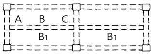
- A단면에서는 스터럽 간격이 B단면에서의 스터럽 간격보다 촘촘하다.
- B단면에서는 하부근이 주근이다.
- C단면에서의 스터럽 간격이 B단면에서의 스터럽 간격보다 촘촘하다.
- C단면에서는 하부근이 주근이다.
(정답률: 46%)
42. 인장력 P＝30kN을 받을 수 있는 원형강봉의 단면적은? (단, 강재의 허용인장응력은 160MPa이다.)
- 1.875mm2
- 18.75mm2
- 187.5mm2
- 1875mm2
(정답률: 45%)
43. 등분포하중을 받는 단순보에서 보 중앙점의 탄성처짐에 관한 설명으로 옳은 것은?
- 처짐은 스팬의 제곱에 반비례한다.
- 처짐은 단면2차모멘트에 비례한다.
- 처짐은 단면의 형상과는 상관이 없고, 재질에만 관계된다.
- 처짐은 탄성 계수에 반비례 한다.
(정답률: 44%)
44. 그림과 같이 스팬이 9.6m이며 간격이 2m인 합성보 A의 슬래브 유효폭 be는?
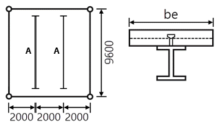
- 1800㎜
- 2000㎜
- 2200㎜
- 2400㎜
(정답률: 45%)
45. 압연 H형강 H-300×300×10×15의 플랜지 폭두께비는? (단, 균일 압축을 받는 상태이다.)
- 8
- 10
- 15
- 18
(정답률: 45%)
46. 강구조 기둥의 주각부분에 사용되는 것이 아닌 것은?
- 앵커 볼트(Anchor bolt)
- 리브 플레이트(Rib plate)
- 플레이트 거더(Plate girder)
- 베이스 플레이트(Base plate)
(정답률: 46%)
47. 강도설계법에 의한 전단 설계 시 부재축에 직각인 전단철근을 사용할 때 전단철근에 의한 전단강도 Vs는? (단, s는 전단철근의 간격)
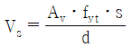
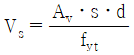
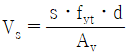
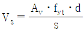
(정답률: 42%)
48. 철근콘크리트구조의 콘크리트피복에 관한 설명으로 옳지 않은 것은?
- 기둥과 보에서의 피복두께는 주근의 중심과 콘크리트 표면과의 최단 거리를 말한다.
- 화재 시 철근의 빠른 가열에 의한 강도저하를 방지한다.
- 철근과의 부착력을 확보한다.
- 철근의 부식을 방지한다.
(정답률: 52%)
49. 다음 그림과 같은 구조물에서 C점에서의 반력은?
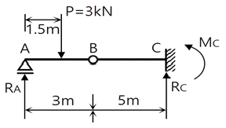
- Rc＝1.5kN, Mc＝-6.0kN·m
- Rc＝1.5kN, Mc＝-7.5kN·m
- Rc＝3.0kN, Mc＝-6.0kN·m
- Rc＝3.0kN, Mc＝-7.5kN·m
(정답률: 38%)
50. 그림과 같은 보에서 중앙점 C의 휨모멘트는?
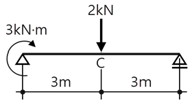
- 1.5kN·m
- 3kN·m
- 4.5kN·m
- 6kN·m
(정답률: 23%)
51. 강재의 기계적 성질과 관련된 응력-변형도 곡선에서 가장 먼저 나타나는 점은?
- 비례한계점
- 탄성한계점
- 상위항복점
- 하위항복점
(정답률: 41%)
52. 반지름 r인 원형단면의 도심축에 대한 단면계수의 값으로 옳은 것은?
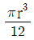
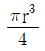
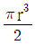
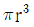
(정답률: 45%)
53. 다음 그림과 같은 연속보에서 B점의 휨모멘트는?
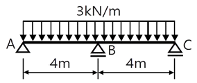
- -2kN·m
- -3kN·m
- -4kN·m
- -6kN·m
(정답률: 29%)
54. 그림과 같은 구조물의 부정정 차수는?
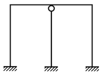
- 3차 부정정
- 5차 부정정
- 7차 부정정
- 9차 부정정
(정답률: 47%)
55. 강도설계법으로 철근콘크리트보를 설계 시 공칭모멘트 강도 Mn＝150kN·m, 강도감소계수 상 ø＝0.85일 때 설계모멘트값은?
- 95.6kN·m
- 114.8kN·m
- 127.5kN·m
- 176.5kN·m
(정답률: 47%)
56. 직경이 50mm이고, 길이가 2m인 강봉에 100kN의 축방향 인장력이 작용할 때 변형량은? (단, 강봉의 탄성계수 E＝2.0×105MPa)
- 0.51mm
- 1.02mm
- 1.53mm
- 2.04mm
(정답률: 30%)
57. 철근 직경(db)에 따른 표준갈고리의 구부림 최소 내면 반지름 기준으로 옳지 않은 것은?
- D25 주철근 : 3db 이상
- D13 주철근 : 2db 이상
- D16 띠철근 : 2db 이상
- D13 띠철근 : 2db 이상
(정답률: 37%)
58. 그림과 같은 철근콘크리트기둥에서 띠철근의 수직간격으로 옳은 것은?
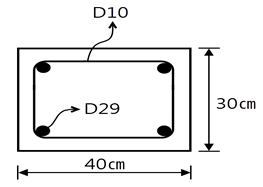
- 300mm 이하
- 350mm 이하
- 400mm 이하
- 450mm 이하
(정답률: 42%)
59. 기성콘크리트말뚝을 타설할 때 그 중심간격은 말뚝머리지름의 최소 몇 배 이상으로 하여야 하는가?
- 1.5배
- 2.5 배
- 3.5배
- 4.5배
(정답률: 52%)
60. 다음 그림과 같은 단순보의 B지점의 반력값은?
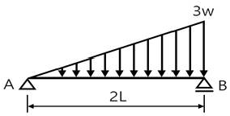
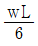
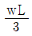
- wL
- 2wL
(정답률: 43%)
4과목: 건축설비
61. 급기와 배기측에 팬을 부착하여 정확한 환기량과 급기량 변화에 의해 실내압을 정압(＋) 또는 부압(-)으로 유지할 수 있는 환기방법은?
- 자연환기
- 제1종 환기
- 제2종 환기
- 제3종 환기
(정답률: 51%)
62. 다음과 같은 식으로 산출되는 것은?
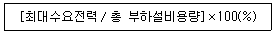
- 수용률
- 부등률
- 부하율
- 역률
(정답률: 46%)
63. 고가수조식 급수설비에서 양수펌프의 흡입양정이 5m, 토출양정이 45m, 관내마찰손실이 30kPa라면 펌프의 전양정은?
- 약 40m
- 약 45m
- 약 53m
- 약 80m
(정답률: 40%)
64. 보일러의 출력 중 상용출력의 구성에 속하지 않는 것은?
- 난방부하
- 급탕부하
- 예열부하
- 배관부하
(정답률: 48%)
65. LPG에 관한 설명으로 옳지 않은 것은?
- 공기보다 무겁다.
- 액화석유가스를 말한다.
- LNG에 비해 발열량이 크다.
- 메탄(CH4)을 주성분으로 하는 천연가스를 냉각하여 액화시킨 것이다.
(정답률: 49%)
66. 난방부하 계산에 일반적으로 고려하지 않는 사항은?
- 환기에 의한 손실 열량
- 구조체를 통한 손실 열량
- 재실 인원에 따른 손실 열량
- 틈새 바람에 의한 손실 열량
(정답률: 47%)
67. 압력에 따른 도시가스의 분류에서 중압의 압력 범위로 옳은 것은?
- 0.1MPa 이상 1MPa 미만
- 0.1MPa 이상 10MPa 미만
- 0.5MPa 이상 5MPa 미만
- 0.5MPa 이상 10MPa 미만
(정답률: 44%)
68. 온수난방방식에 관한 설명으로 옳지 않은 것은?
- 온수의 현열을 이용하여 난방하는 방식이다.
- 한랭지에서 운전 정지 중에 동결의 위험이 있다.
- 열용량이 작아 증기난방에 비해 예열시간이 짧게 소요된다.
- 증기난방에 비해 난방부하 변동에 따른 온도 조절이 비교적 용이하다.
(정답률: 57%)
69. 형광램프에 관한 설명으로 옳지 않은 것은?
- 점등까지 시간이 걸린다.
- 백열전구에 비해 효율이 높다.
- 백열전구에 비해 수명이 길다.
- 역률이 높으며 백열전구에 비해 열을 많이 발산한다.
(정답률: 49%)
70. 다음 설명에 알맞은 자동화재탐지설비의 감지기는?
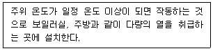
- 정온식
- 차동식
- 광전식
- 이온화식
(정답률: 56%)
71. 실내기온 26℃(절대습도＝0.0107㎏/㎏'), 외기온 33℃(절대습도＝0.0184㎏/㎏'), 1시간당 침입 공기량이 500m3일 때 침입외기에 의한 잠열 부하는? (단, 공기의 밀도 1.2㎏/m3, 0℃에서 물의 증발 잠열 2501kJ/㎏)
- 약 1192W
- 약 3210W
- 약 3576W
- 약 4768W
(정답률: 31%)
72. 면적 100m2, 천장높이 3.5m인 교실의 평균조도를 100[lx]로 하고자 한다. 다음과 같은 조건에서 필요한 광원의 개수는?
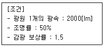
- 8개
- 15개
- 19개
- 23개
(정답률: 45%)
73. 급탕배관 설계 및 시공 시 주의해야 할 사항으로 옳지 않은 것은?
- 건물의 벽관통부분의 배관에는 슬리브를 설치한다.
- 중앙식 급탕설비는 원칙적으로 강제순환방식으로 한다.
- 상향배관인 경우, 급탕관과 환탕관 모두 상향 구배로 한다.
- 이종금속 배관재의 접속 시에는 전식(電蝕) 방지 이음쇠를 사용한다.
(정답률: 43%)
74. 통기관의 기능과 가장 거리가 먼 것은?
- 배수계통 내의 배수 및 공기의 흐름을 원활히 한다.
- 배수관의 수명을 연장시키며 오수의 역류를 방지 한다.
- 배수관 계통의 환기를 도모하여 관내를 청결 하게 유지한다.
- 사이펀 작용 및 배압에 의해서 트랩봉수가 파괴되는 것을 방지한다.
(정답률: 33%)
75. 다음의 공기조화방식 중 전공기방식에 속하는 것은?
- 유인 유닛방식
- 멀티존 유닛방식
- 팬코일 유닛방식
- 패키지 유닛방식
(정답률: 42%)
76. 다음 중 펌프에서 공동현상(cavitation)의 방지 방법으로 가장 알맞은 것은?
- 흡입양정을 낮춘다.
- 토출양정을 낮춘다.
- 마찰손실수두를 크게 한다.
- 토출관의 직경을 굵게 한다.
(정답률: 36%)
77. 배수트랩을 설치하는 가장 주된 목적은?
- 배수의 역류 방지
- 배수의 유속 조정
- 배수관의 신축 흡수
- 하수가스 및 취기의 역류 방지
(정답률: 43%)
78. 증기난방에 사용되는 방열기의 표준 방열량은?
- 0.523kW/m2
- 0.650kW/m2
- 0.756kW/m2
- 0.924kW/m2
(정답률: 50%)
79. 다음 중 옥내배선에서 간선의 굵기 결정요소와 가장 관계가 먼 것은?
- 허용전류
- 전압강하
- 배선방식
- 기계적 강도
(정답률: 43%)
80. 압축식 냉동기의 냉동사이클에서, 냉매가 압축기에서 응축기로 들어갈 때의 상태는?
- 저온 고압의 액체
- 저온 저압의 액체
- 고온 고압의 기체
- 고온 저압의 기체
(정답률: 38%)
5과목: 건축관계법규
81. 연면적 200m2을 초과하는 오피스텔에 설치하는 복도의 유효너비는 최소 얼마 이상이어야 하는가? (단, 양옆에 거실이 있는 복도)
- 1.2m
- 1.5m
- 1.8m
- 2.4m
(정답률: 42%)
82. 다음 용도지역 안에서의 건폐율 기준이 틀린 것은?
- 준주거지역 : 60퍼센트 이하
- 중심상업지역 : 90퍼센트 이하
- 제3종일반주거지 역 : 50퍼센트 이하
- 제1종전용주거지역 : 50퍼센트 이하
(정답률: 33%)
83. 교육연구시설 중 학교 교실의 바닥면적이 400m2인 경우, 이 교실에 채광을 위하여 설치하여야 하는 창문의 최소 면적은? (단, 창문으로만 채광을 하는 경우)
- 10m2
- 20m2
- 30m2
- 40m2
(정답률: 45%)
84. 건축물의 주요구조부를 내화구조로 하여야 하는 대상 건축물에 속하지 않는 것은? (단, 해당 용도로 쓰는 바닥면적의 합계가 500m2인 경우)
- 판매시설
- 수련시설
- 업무시설 중 사무소
- 문화 및 집회시설 중 전시장
(정답률: 32%)
85. 건축허가신청에 필요한 설계도서의 종류 중 건축계획서에 표시하여야 할 사항이 아닌 것은?
- 주차장규모
- 공개공지 및 조경계획
- 건축물의 용도별 면적
- 지역·지구 및 도시계획사항
(정답률: 35%)
86. 다음은 직통계단의 설치에 관한 기준 내용이다. ( ) 안에 알맞은 것은?
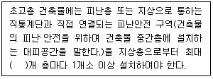
- 20
- 30
- 40
- 50
(정답률: 47%)
87. 다음은 건축물이 있는 대지의 분할제한에 관한 기준 내용이다. 밑줄 친 “대통령령으로 정하는 범위” 기준으로 옳지 않은 것은?
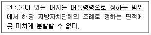
- 주거지역 : 100m2 이상
- 상업지역 : 150m2 이상
- 공업지역 : 150m2 이상
- 녹지지역 : 200m2 이상
(정답률: 39%)
88. 건축법령상 다중이용건축물에 속하지 않는 것은? (단, 16층 미만으로, 해당 용도로 쓰는 바닥면적의 합계가 5000m2인 건축물인 경우)
- 종교시설
- 판매시설
- 의료시설 중 종합병원
- 숙박시설 중 일반숙박시설
(정답률: 43%)
89. 목조 건축물의 외벽 및 처마 밑의 연소 우려가 있는 부분을 방화구조로 하고, 지붕을 불연재료로해야 하는 대규모 목조 건축물의 규모 기준은?
- 연면적 500m2 이상
- 연면적 1,000m2 이상
- 연면적 1,500m2 이상
- 연면적 2,000m2 이상
(정답률: 40%)
90. 다음 그림과 같은 단면을 가진 거실의 반자 높이는?
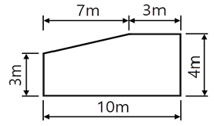
- 3.0m
- 3.3m
- 3.65m
- 4.0m
(정답률: 48%)
91. 공동주택과 오피스텔의 난방설비를 개별난방방식으로 하는 경우에 관한 기준 내용으로 옳은 것은?
- 보일러의 연도는 내화구조로서 공동연도로 설치할 것
- 공동주택의 경우에는 난방구획을 방화구획으로 구획할 것
- 보일러실의 윗부분에는 그 면적이 1m2 이상인 환기창을 설치할 것
- 기름보일러를 설치하는 경우에는 기름저장소를 보일러실에 설치할 것
(정답률: 33%)
92. 국토의 계획 및 이용에 관한 법령상 광장, 공원, 녹지, 유원지가 속하는 기반시설은?
- 교통시설
- 공간시설
- 방재시설
- 문화체육시설
(정답률: 47%)
93. 건축법령상 공동주택에 속하는 것은?
- 공관
- 다중주택
- 다가구주택
- 다세대주택
(정답률: 48%)
94. 방송 공동수신설비를 설치하여야 하는 대상 건축물에 속하지 않는 것은?
- 공동주택
- 바닥면적의 합계가 5000m2 이상으로서 업무시설의 용도로 쓰는 건축물
- 바닥면적의 합계가 5000m2 이상으로서 판매시설의 용도로 쓰는 건축물
- 바닥면적의 합계가 5000m2 이상으로서 숙박시설의 용도로 쓰는 건축물
(정답률: 35%)
95. 택지개발사업, 산업단지개발사업, 도시재개발사업, 도시철도건설사업, 그 밖에 단지 조성 등을 목적으로 하는 사업을 시행할 때에는 일정 규모 이상의 노외주차장을 설치하여야 한다. 이때 설치되는 노외주차장에는 경형자동차를 위한 전용주차구획과 환경친화적 자동차를 위한 전용주차구획을 합한 주차구획이 노외주차장 총주차대수의 최소 얼마 이상이 되도록 하여야 하는가?
- 100분의 5
- 100분의 10
- 100분의 15
- 100분의 20
(정답률: 43%)
96. 건축물에 설치하여야 하는 배연설비에 관한 기준 내용으로 틀린 것은? (단, 기계식 배연설비를 하지 않는 경우)
- 배연구는 예비전원에 의하여 열 수 있도록 할 것
- 배연구는 연기감지기 또는 열감지기에 의하여 자동으로 열 수 있는 구조로 할 것
- 건축물이 방화구획으로 구획된 경우에는 그 구획마다 1개소 이상의 배연창을 설치할 것
- 배연창의 유효면적은 0.7m2 이상으로서 그 면적의 합계가 당해 건축물의 바닥면적의 200분의 1 이상이 되도록 할 것
(정답률: 47%)
97. 건축물의 대지는 원칙적으로 최소 얼마 이상이 도로에 접하여야 하는가? (단, 자동차만의 통행에 사용되는 도로는 제외)
- 1m
- 1.5m
- 2m
- 3m
(정답률: 50%)
98. 지역의 환경을 쾌적하게 조성하기 위하여 일반이 사용할 수 있도록 소규모 휴식시설 등의 공개 공지 또는 공개 공간을 설치하여야 하는 대상 지역에 속하지 않는 것은? (단, 특별자치시장·특별자치도지사 또는 시장·군수·구정장이 지정·공고하는 지역은 제외)
- 준주거지역
- 준공업지역
- 전용주거지역
- 일반주거지역
(정답률: 46%)
99. 그림과 같은 대지조건에서 도로 모퉁이에서의 건축선에 의한 공제 면적은?
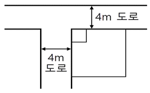
- 2m2
- 3m2
- 4.5m2
- 8m2
(정답률: 47%)
100. 부설주차장 설치 대상 시설물이 숙박시설인 경우, 설치 기준으로 옳은 것은?
- 시설면적 100m2당 1대
- 시설면적 150m2당 1대
- 시설면적 200m2당 1대
- 시설면적 350m2당 1대
(정답률: 40%)